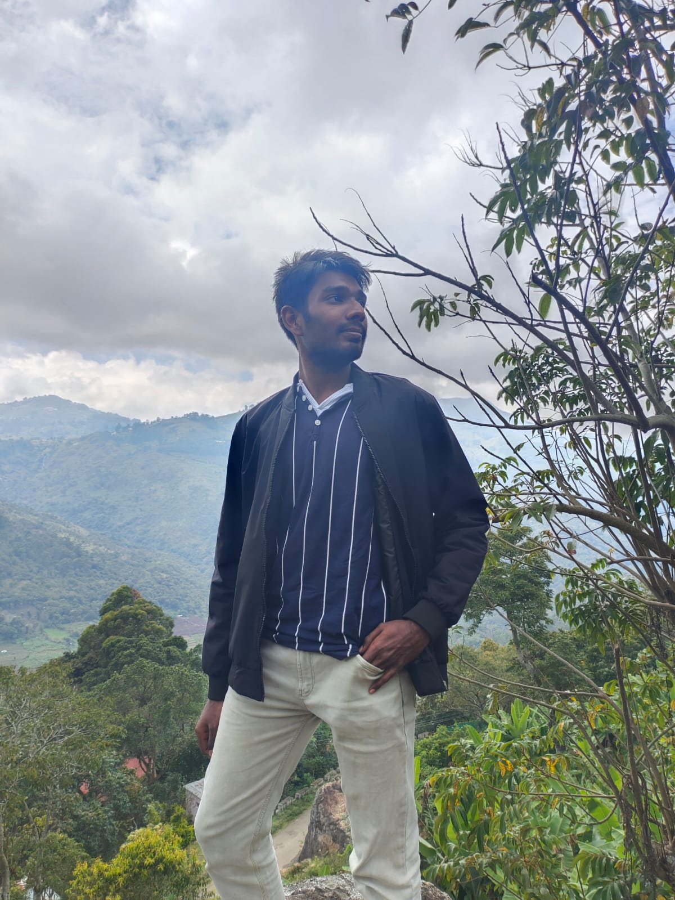

About Me

I am 21 years old. I am currently pursuing Bachelors degree in Computer Science and
Engineering from Thiagarajar College of Engineering. I like coding and always wanted
to make something useful for everyone. I like to explore new places and admire the
beauty of that place. My favourite places to visit are Havelock, Bangalore, Kochi and
Maldives. My favourite foods are Biryani, Dosa, Pasta and Noodles. My favourite cuisine
however is Indian. Apart from these, I love sports. I am passionate about playing tennis.
Other than that, I like to watch Cricket and Football.
Yeah that's all about me!
You can download my resume here: